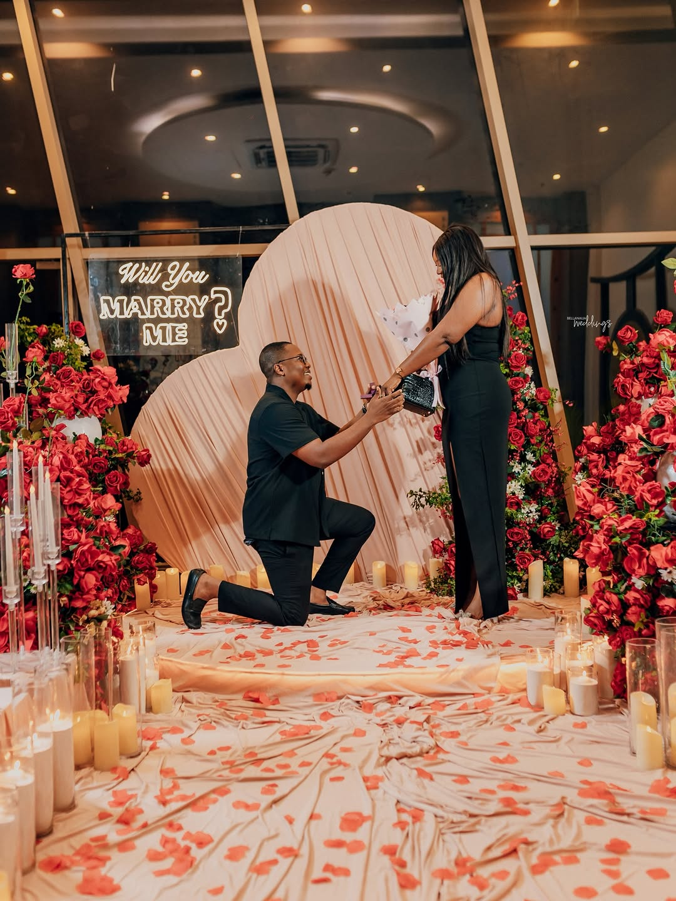
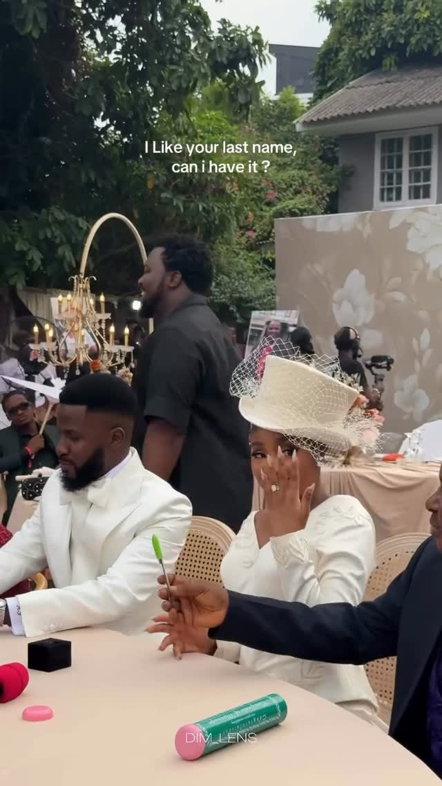
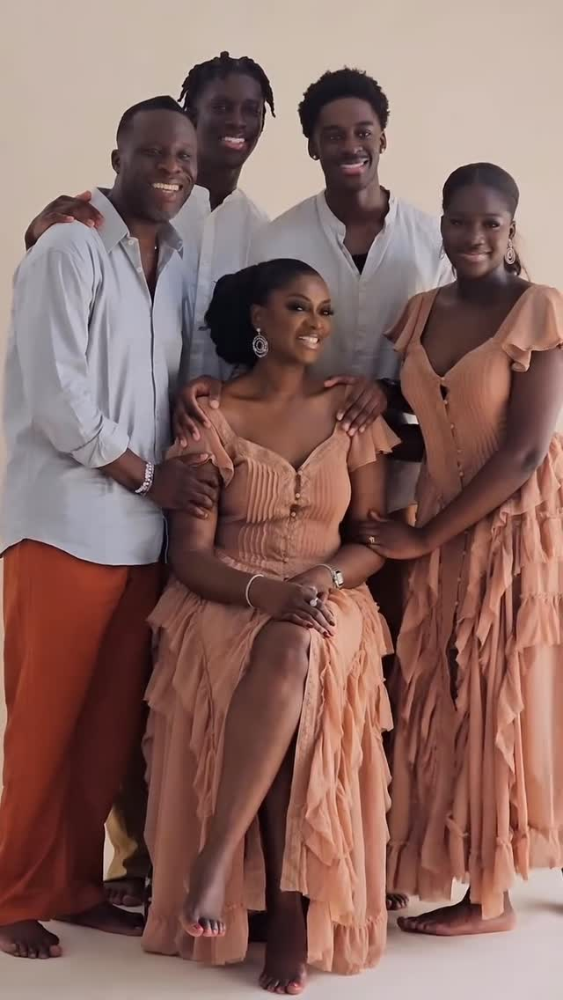
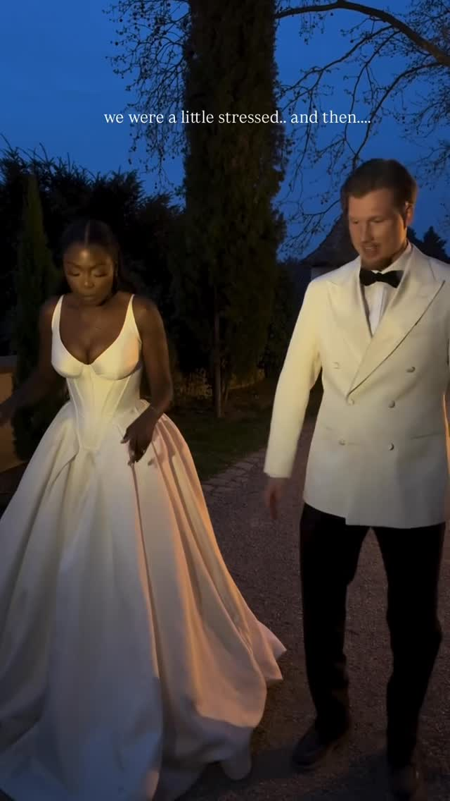
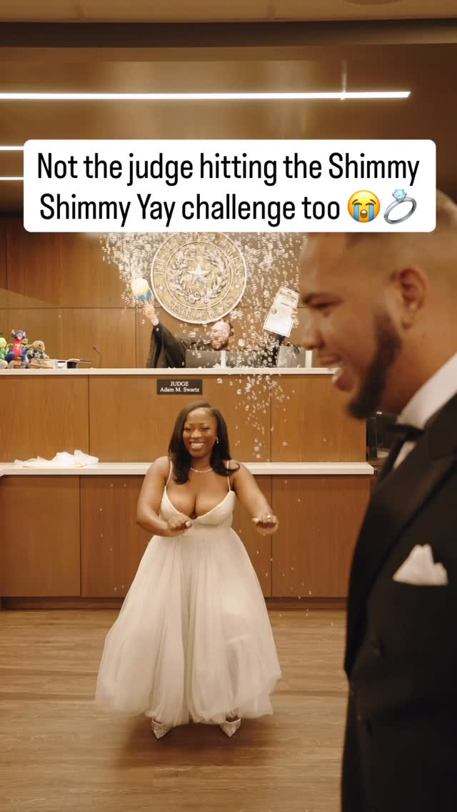
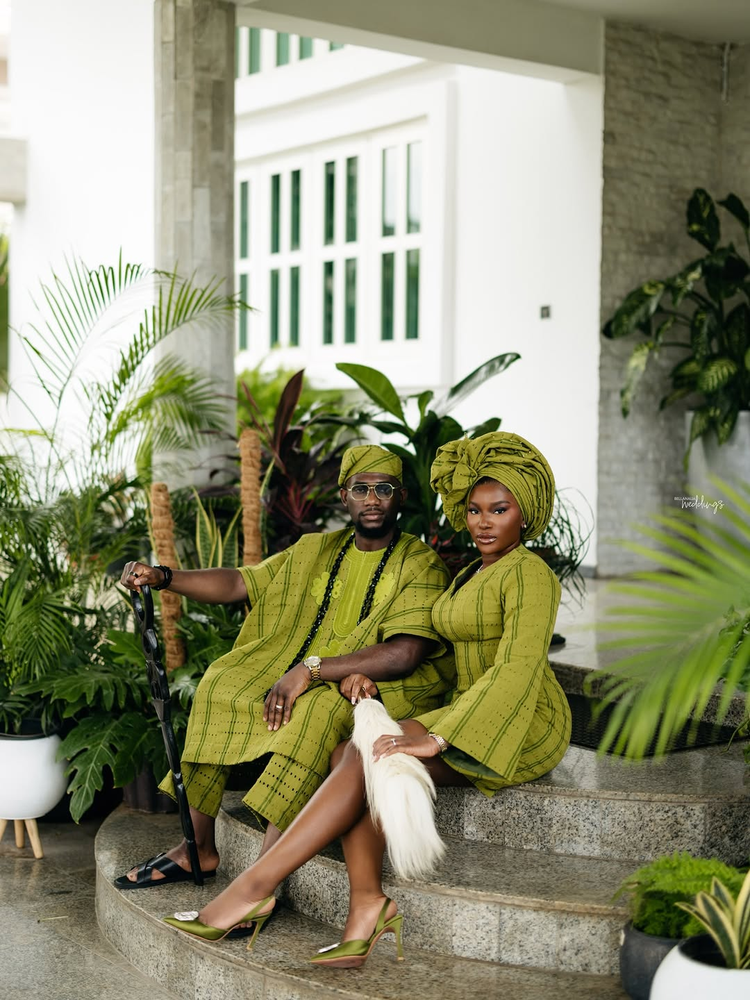

WEDDINGSThe Doctor in Blue Scrubs
On the Nigerian wedding's most quietly persistent love story — the colleague who became, somewhere between Tuesday and Friday, the person you came home to.
FEATURED STORY · THE JOURNAL
CLASSIC · WEDDINGSA newer tradition for an older promise. On the moment a Nigerian groom sees his bride before the ceremony — and what he agrees to in that look.
READ THE STORYRECENT

WEDDINGSOn the Nigerian wedding's most quietly persistent love story — the colleague who became, somewhere between Tuesday and Friday, the person you came home to.

CULTUREA small genre of wedding caption — <em>she said she loves his last name</em> — and what it signals about a generation negotiating tradition without giving up choice.

WEDDINGSOn the moment, somewhere between the cake and the dance floor, when forty relatives line up for one image — and the wedding becomes, briefly, a census.
On the small new genre of wedding video where a Nigerian father helps his son tie a tie, fix a cuff, fold a pocket square — and the camera, mercifully, does not say much.
<em>To love, to hold, to protect, forever.</em> A short note on the four-verb structure that Nigerian couples have, almost by consensus, adopted as their own.

WEDDINGSHolding the gown. Carrying the bouquet. Steadying her elbow. On the small, photographed acts of attention that have become a Nigerian wedding's most-shared gesture.
On the slower, more sovereign palette of the Northern Nigerian wedding — gold thread, pale silks, a bride who walks into the room as an entire colour story.
On the moment in every Nigerian reception when the choreography drops and the room realises it has been watching a love story dance.
On the bride who sings, the groom who weeps, and the small public permission a Nigerian wedding gives a man to come undone.

CULTUREA judge dances during a Nigerian-American courtroom wedding — and a generation of diaspora couples find a third way between the registry and the ballroom.

WEDDINGSOnce a save-the-date detail, now a full editorial — with a cast, a wardrobe and a love story rehearsed for the lens.
FROM THE ARCHIVE
On the new generation of Nigerian brides who arrive at the planner's first meeting with a moodboard, a bridal-styling lead and a vision they have spent three months refining in private.
When a celebrated Lagos artist showed up in full aso-oke regalia, an entire hand-loomed tradition picked up something it had not had in a generation: the unembarrassed attention of the cool kids.
A newer tradition for an older promise — the moment a Nigerian groom sees his bride before the ceremony, and what he agrees to in that look.
JOIN THE JOURNAL
One thoughtful essay, one lookbook, one new arrival — every other Sunday.